X1478–X1511¶
Johnson-Yff Circle, Perspectors & Star-Named Centers
The Johnson-Yff circle center, tangential-of-tangential perspectors, star-named centers (Bellatrix, Betelgeuse, Biham), and Napoleon and Fermat crosssums.
X1478–X1511 (Johnson-Yff Circle, Perspectors & Star-Named Centers) — 14 representative centers (from 34 in collection) constructed on acute reference triangle \((a, b, c) = (5, 6, 7)\) with unit baseline AB = \(1\).¶
X1478CENTER OF JOHNSON-YFF CIRCLE
The Johnson Circle Theorem is the fact that if three congruent circles intersect in a point, then the circle passing through the other three intersections is congruent to them. This fourth circle is the Johnson circle of the three given circles. There are three congruent circles each tangent to two sides of triangle ABC. Peter Yff proved that their Johnson circle has center X1478. The circle is here named the Johnson-Yff circle of the triangle.
X1479{X1,X4}-HARMONIC CONJUGATE OF X1478
X1479 is the {X1,X4}-harmonic conjugate of X1478.
X14801st SHADOW POINT
X1480 = X1-Ceva conjugate of X999
X1481POINT ASTEROPE
(For the 2nd Shadow Point, see X6580.
X1482REFLECTION OF CIRCUMCENTER IN INCENTER
X1482 is the reflection of circumcenter in incenter.
X1483REFLECTION OF X5 IN X1
X1483 is the reflection of X5 in X1.
X1484REFLECTION OF X5 IN X11
X1484 is the reflection of X5 in X11.
X1485PERSPECTOR OF ABC AND TANGENTIAL-OF-TANGENTIAL TRIANGLE
X1485 is the perspector of ABC and tangential-of-tangential triangle.
X1486PERSPECTOR OF TANGENTIAL AND INTOUCH TRIANGLES
X1486 is the perspector of tangential and intouch triangles.
X1487NAPOLEON CEVAPOINT
Let N denote the nine-point center, X5. Let NA = N-of-triangle NBC, and define NB and NC cyclically. Triangle NANBNC is perspective to ABC, and X1487 is the perspector. X1487 is the cevapoint of the Napoleon points, X17 and X18. (Coordinates found by Paul Yiu.)
X14882nd STEVANOVIC POINT
X1488 = X1-cross conjugate of X174
X14893rd STEVANOVIC POINT
X1489 = complement of X1143
X1490∩X3X_9
X1490 = reflection of X84 in X3
X1491CROSSDIFFERENCE OF X1 AND X32
X1491 = reflection of X659 in X650
X1492COLUMBUS POINT
X1492 = cevapoint of X513 and X1386
X1493NAPOLEON CROSSSUM
X1493 = midpoint of X54 and X195
X1494ISOTOMIC CONJUGATE OF X30
X1494 is the isotomic conjugate of X30.
X1495CROSSSUM OF X2 AND X30
X1495 = midpoint of X23 and X110
X1496POINT BETELGEUSE I
X1496 = {X1,X63}-harmonic conjugate of X774
X1497POINT BETELGEUSE II
X1497 = {X1,X31}-harmonic conjugate of X255

X1498REFLECTION OF X64 IN X3
Let (Ba, Ca) be the points where BC is cut by the parallels through A to the b- and c- altitudes, respectively, and define (Cb, Ab), (Ac, Bc) cyclically. Then the perpendicular bisectors of (Ba, Ca), (Cb, Ac) and (Ac, Bc) concur at X1498. (Hyacinthos #62, #72, #73)
X1499POINT BIHAM
X1499 = crosspoint of X99 and X598
X1500INSIMILICENTER OF MOSES CIRCLE AND INCIRCLE
The circle having center X39 and radius R tan ω sin 2ω, where R denotes the circumradius of triangle ABC, is here introduced as the Moses circle. It is tangent to the nine-point circle at X115, and its internal and external centers of similitude with the incircle are X1500 and X1015, respectively. (Peter J. C. Moses, 5/29/03)
X1501TRILINEAR 5th POWER POINT
X1501 = crossdifference of every pair of points on line X826X850
X1502ISOGONAL CONJUGATE OF X1501
X1502 is the isogonal conjugate of X1501.
X1503POINT ARKAB
As the isogonal conjugate of a point on the circumcircle, X1503 lies on the line at infinity.
X1504INSIMILICENTER OF MOSES AND 2nd LEMOINE CIRCLES
X1504 is the insimilicenter of moses and 2nd Lemoine circles.
X1505EXSIMILICENTER OF MOSES AND 2nd LEMOINE CIRCLES
X1505 is the exsimilicenter of moses and 2nd Lemoine circles.
X1506INSIMILICENTER OF MOSES AND NINE-POINT CIRCLES
X1506 is the insimilicenter of moses and nine-point circles.
X15071st MORLEY-GIBERT POINT
X1507 and X1508 are centers on Morley cubic, which also passes through X356, X357, X358; see Bernard Gibert’s site.
X15082nd MORLEY-GIBERT POINT
X1508 is the perspector of the excentral tiangle and the 1st Morley adjunct triangle. (César Lozada, January 18, 2015)
X1509ISOGONAL CONJUGATE OF X1500
X1509 is the isogonal conjugate of X1500.
X1510NAPOLEON CROSSDIFFERENCE
X1510 = X137-cross conjugate of X143
X1511FERMAT CROSSSUM
X1511 = complement of X265